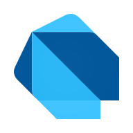

Tutorial de Dart

Dart es un lenguaje de programación moderno desarrollado por Google, utilizado principalmente para crear aplicaciones multiplataforma de alto rendimiento.
Dart admite múltiples paradigmas de programación, como la programación orientada a objetos y la funcional, y puede ejecutarse en navegadores, servidores, dispositivos móviles y plataformas de escritorio.
Dart es el lenguaje central del framework Flutter; con Dart se pueden desarrollar rápidamente aplicaciones para Android, iOS, Web y escritorio.
Este tutorial está probado con la versión Dart 3.x y es adecuado para desarrolladores sin experiencia previa que deseen aprender programación en Dart.
Antes de aprender Dart, necesita conocer los siguientes conceptos:
- Conceptos básicos de programación
- Variables y tipos de datos
- Condicionales y bucles
- Fundamentos de la programación orientada a objetos
Si está familiarizado con lenguajes como JavaScript, Java, C# o Python, aprender Dart será más fácil.
Ámbitos de aplicación de Dart
Dart adopta conceptos modernos de diseño de lenguajes, con una sintaxis concisa, un potente sistema de tipos y un entorno de ejecución eficiente.
Los principales ámbitos de aplicación de Dart:
- Desarrollo de aplicaciones móviles: Cree aplicaciones para Android e iOS con Flutter.
- Desarrollo web: Dart se puede compilar a JavaScript y ejecutarse en el navegador.
- Desarrollo de servidores: Usar Dart para crear servicios backend y APIs.
- Aplicaciones de escritorio: Admite el desarrollo de aplicaciones para Windows, macOS y Linux.
- Desarrollo multiplataforma: un código que se ejecuta en múltiples plataformas.
Primer ejemplo
Ejemplo de Hello World en Dart
print("Hello Dart!");
}
Características y ventajas de Dart
-
Fácil de aprender: La sintaxis de Dart es clara y concisa; tiene muchas similitudes con lenguajes como Java y JavaScript, por lo que su curva de aprendizaje es baja.
-
Orientado a objetos: Dart es un lenguaje puramente orientado a objetos, donde todo es un objeto; admite clases, herencia, interfaces, mixins, etc.
-
Sistema de tipado fuerte: Dart ofrece comprobación estática de tipos, lo que ayuda a los desarrolladores a reducir errores y mejorar la calidad del código.
-
Alto rendimiento: Dart admite JIT (compilación just-in-time) y AOT (compilación anticipada), lo que proporciona una experiencia de desarrollo rápida y un buen rendimiento en tiempo de ejecución.
-
Desarrollo multiplataforma: Dart junto con Flutter permite usar el mismo código para desarrollar aplicaciones móviles, Web y de escritorio.
-
Características modernas del lenguaje: Dart admite funciones modernas del lenguaje como programación asíncrona, null safety, métodos de extensión y coincidencia de patrones.
-
Amplias herramientas de desarrollo: Dart ofrece un soporte completo para el entorno de desarrollo, incluyendo el Dart SDK, herramientas de depuración y herramientas de análisis de código.
-
El poderoso ecosistema de Flutter: Dart es el lenguaje oficial de desarrollo de Flutter y cuenta con una gran cantidad de componentes de UI y bibliotecas de terceros.
-
Mecanismo de seguridad contra nulos: El Null Safety de Dart puede reducir los fallos del programa causados por valores nulos.
-
Soporte de la comunidad de código abierto: Dart cuenta con una comunidad de desarrollo activa y recibe actualizaciones y mejoras continuas del lenguaje.
Comparación de Dart con otros lenguajes
- Dart vs JavaScript：El sistema de tipos de Dart es más estricto, por lo que resulta adecuado para el desarrollo de proyectos a gran escala.
- Dart vs Java：La sintaxis de Dart es más moderna y ofrece una mayor eficiencia de desarrollo.
- Dart vs Python：El rendimiento de Dart es más cercano al de los lenguajes compilados, adecuado para la creación de aplicaciones.
Flutter y Dart
Flutter es un framework de desarrollo de UI multiplataforma creado por Google, y Dart es el lenguaje de desarrollo que utiliza Flutter.
Con Flutter + Dart, los desarrolladores pueden usar un solo código para crear rápidamente aplicaciones para múltiples plataformas.
- Aplicaciones Android
- Aplicaciones iOS
- Aplicaciones web
- Aplicaciones Windows
- Aplicaciones macOS
- Aplicaciones Linux
Referencias:
Sitio web oficial: https://dart.dev/
Documentación en chino: https://dart.cn/
Sitio web oficial de Flutter: https://flutter.dev/
Tutorial de Flutter: https://www.example.com/flutter/flutter-tutorial.html
Otras extensiones